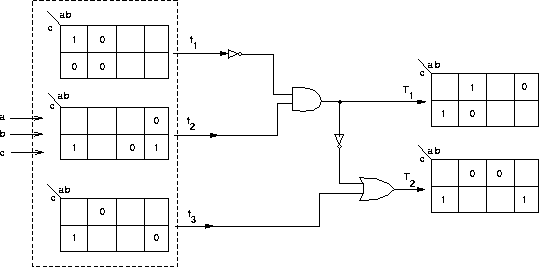

CMSC 311- Computer Organization
Fall 1995 - Assignment #2
Due (at the beginning of class) Thursday, September 21
- From Mano 1-15.
- From Mano 1-16.
- The occupants of A.V. Williams have gotten tired of people
who get on the elevator on the ground floor and want to go up
to the second floor. You are to design a circuit to be installed
in the elevator to prevent this from happening. After looking
at the elevator, you discover there are two wires that encode
the current floor (in binary). There are also four wires that
correspond to the buttons in the elevator to select the floor.
Your circuit should take as input the current floor, and the
wire from second floor button and output a true signal iff the
second floor has been requested from a floor other than the first.
- Design the following:
- a T flip-flop using a D flip-flop and combinational logic.
- a D flip-flop using a T flip-flop and combinational logic.
- From Mano, problem 1-19.
- For the combinational circuit shown below you are given partial
K-Maps for the intermediate functions f 1, f 2, f3 and the output
functions T 1, T2. Complete the K-Maps so as to satisfy all necessary
relations. Use as many don't cares as you can.
